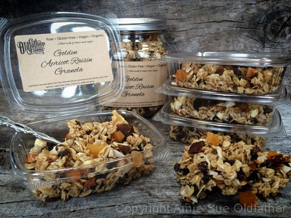

Golden Apricot Raisin Granola

~ raw, vegan, gluten-free ~
I created this recipe for my dad who is a trucker. Those of you who have read through some of my recipes might have seen the ” Long Haul” series that I am creating in honor of him.
My dad spends countless days, weeks, and months on the road, away from the family. It has been that way ever since he came into my life at the age of 12. So even though we know this “way of life,” it doesn’t make it any easier.
I love my dad, and I care deeply for him, and one of the many ways that I try to express that to him is by sending him care packages of healthy, raw foods that he can enjoy as the never-ending stretch of asphalt passes beneath him.
This is a dual recipe. It can be eaten dry as granola, or you can add your favorite milk and eat it as a cereal. Since I made this for my dad, I packaged up single servings in some neat little containers that have lids attached to them. He can just add the milk and enjoy. No dishes… and that is good for a man who lives in his truck.
I feel confident in knowing that he will be getting a hardy, nutrient-filled breakfast, or mid-night snack (knowing him). Oats are a source of energy-giving protein, B vitamins, vitamin E, calcium, and iron. They also say that it has the capacity to lower LDL (“bad”) cholesterol levels. Oats’ soluble fiber also promotes digestive health. I also wanted to make sure that he was getting enough omega-3’s in his diet. And let’s be honest here… traveling along can cause the pipes to clog up… and flax-seeds create mucilage when exposed to liquid. This “mucilage” is a water-soluble, gel-forming fiber that can provide special support to the intestinal tract. I got your back, Dad. :)
I choose to use maple syrup and raw honey as the sweeteners in this recipe. I like the complexity of the two combined. Maple syrup is not a raw product, but it comes with health benefits. When you buy maple syrup, don’t be fooled by the many maple-flavored syrups that line supermarket shelves. These syrups don’t have the health benefits of pure maple syrup. Be sure to get the real thing. Just like any sweetener, use in moderation. You can substitute maple syrup with your choice of sweetener. Now… the question is… can I restrain myself from eating all of this before I get it to my dad? Hehe, Enjoy!
Yields 9 1/2 cups
Dry Ingredients:
Wet Ingredients:
- 1/4 cup maple syrup
- 1/4 cup raw honey or vegan equivalent
- 1/4 cup cold-pressed coconut oil, melted
- 1 tsp vanilla extract
Preparation:
- Dehydrate at 145 degrees (F) for 1 hour, then reduce to 115 degrees (F) for 8-14 hours or until dry. Drying time depends on several factors:
- Drop the granola batter on the mesh sheets that come with the dehydrator. If for some reason your batter is too wet for this, start it out on the teflex sheet until it gets dry enough to put on the mesh sheet.
- Using your hands, get in there, and mix everything together until it is all evenly coated.
- In a small bowl combine, the maple syrup, honey, coconut oil, and vanilla. Whip together and pour into the bowl with the other ingredients.
- Continue to add the ground flax, shredded coconut, raisins, apricots, cinnamon, and salt. Mix well with your hands.
- After soaking the nuts, drain and rinse them. Add to the oats.
- After soaking the oats, be sure to rinse them well, until the water starts to run more on the clear side. Hand-squeeze the excess water out and place in a large bowl.
- Temperature – the lower the temperature, the longer the drying time. I recommend dehydrating them at 115 degrees (F) to preserve the enzymes and nutrients.
- Humidity – the higher the humidity in the room air, the longer the dry time will be.
- Water content – the higher the water content, the longer it will take to dry.
- Store in an air-tight container on the counter or semi for 1-2 weeks. It will keep for 1-2 months in the freezer.
The Institute of Culinary Ingredients™
- To learn more about maple syrup by clicking (here).
- To learn more about Yacon syrup by clicking (here).
- Raw honey isn’t vegan, but I still use it now and again. Read (here) why I like to.
- Why do I specify Ceylon cinnamon? Click (here) to learn why.
- What is Himalayan pink salt and does it really matter? Click (here) to read more about it.
- Are oats gluten-free? Yes, read more about that (here).
- Are oats raw? Yes, they can be found. Click (here) to learn more.
- Do I need to soak and dehydrate oats? Not required but recommended. Click (here) to see why.
Culinary Explanations:
- Why do I start the dehydrator at 145 degrees (F)? Click (here) to learn the reason behind this.
- When working with fresh ingredients, it is important to taste test as you build a recipe. Learn why (here).
- Don’t own a dehydrator? Learn how to use your oven (here). I do however truly believe that it is a worthwhile investment. Click (here) to learn what I use.

© AmieSue.com